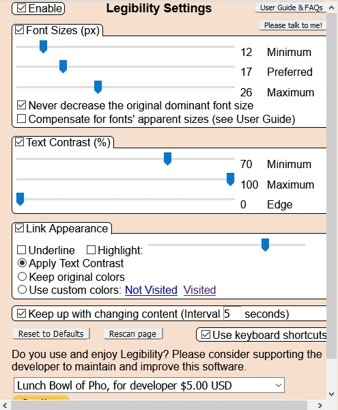

Nicolas Chinaglia | Silvio Fratuchelli
2020-12-04 07:50
Pessoas com baixa visão apresentam dificuldades em ver detalhes no dia a dia. Por exemplo, veem as pessoas mas não reconhecem a feição; as crianças enxergam a lousa, porém, não identificam as palavras; no ponto de ônibus, não reconhecem os letreiros.
Extensão de Navegador
Legibility é uma extensão do Firefox que possui como função tornar páginas da web mais legíveis ajustando elementos como tamanho do texto, contraste e links. Ele auxilia pessoas que enfrentam problemas como baixa visão a terem uma experiência inclusiva na WEB.
Interface onde o usuário pode criar sua própria configuração e ativar / desativar a extensão. Dentro das configurações o usuário pode escolher o tamanho mínimo ou máximo da fonte, selecionar a porcentagem de contraste e personalizar links para melhor visualização.